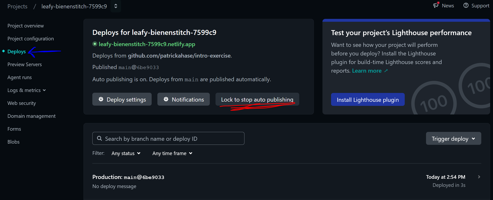

This page contains a brief recap of deploying our prototype and final creative tool using Netlify.
While we switched to Neocities to publish our studioWorkIndex, we will return to using Netlify for our actual tools. As discussed in class, we switched due to the restrictive credits, however if we set it up carefully as per these instructions, the free deployments each month should be enough for our purposes.
Note: You have 300 free credits per month, and each deployment costs 15 credits. You can keep track in Netlify's usage and billing tab, but I've found there is a couple of minute delay on updating the amount.
-
Deploy with Netlify:
Navigate to https://www.netlify.com/ in your browser and press log in, then select 'Log in with GitHub'. You'll have to authorise this with your GitHub account if it's your first time. Then make sure you're in the projects view (via tab on left) and select 'Add new project' then 'Import an existing project' then click GitHub and authorise the session. You should see a list of your repositories, select the appropriate one (whatever your studio project repo is called). -
Turning off auto publishing:
The next step is very important to stop eating up all your credits each time you update your git repo.
First navigate to your "Deploys" page from the menu on the left (blue arrow in the image below). Then turn off auto publishing via the button (underlined in red).
From now on pushing to our repo will not automatically update the deployment. You will see the updates in the log on this page, but you will notice that it won't be tagged with "published". -
Manually publish update:
Once you are happy with your prototype and want to update it at the deployed URL, navigate back to the "Deploys" page for the project (as seen above), and click on the latest deploy in the log. This page should have a button labelled "Publish deploy" which will update your URL.
Be careful to not overdo this, as mentioned you only have around 20 free deploys per month. This should be enough for our purposes, but it is limited. -
Next steps:
After we complete our Peer User Testing, we will convert this deploy to an archive of our prototype. I will cover this process in class and update these instructions at that time. - If you have any issues with this process or are close to running out of credits please email me.